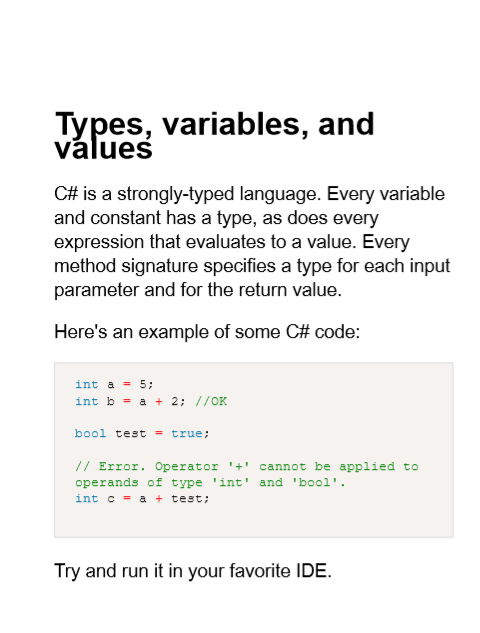

Getting started
Typ turns plain Markdown into a formatted PDF, ready for print. It is accessed through a command line interface.
Your first document
We're going to make a PDF that looks like this:

(See the sample project for the full PDF file)
First install Typ. See Installation.
Open a command line terminal. If Typ is not on your PATH, navigate to the installation folder from the terminal.
Create a file called text.md.
Open text.md and write something in Markdown. If you need inspiration, copy this:
# Types, variables, and values
C# is a strongly-typed language. Every variable and constant has a type, as does every expression that evaluates to a value. Every method signature specifies a type for each input parameter and for the return value.
Here's an example of some C# code:
```c#
int a = 5;
int b = a + 2; //OK
bool test = true;
// Error. Operator '+' cannot be applied to operands of type 'int' and 'bool'.
int c = a + test;
```
Try and run it in your favorite IDE.
Run typ typeset --inputFilepaths text.md.
Using text.md, Typ will then create a formatted PDF called output.pdf.
Notes for Linux users 🚨
- Make
typexecutable withchmodsudo chmod +x typ
- Typ depends on Python 3 on Linux
- It looks for Python 3 in
#!/usr/bin/python3
- It looks for Python 3 in
- You may need to run Typ with elevated permissions (e.g. with
sudo).sudo ./typ typeset --inputFilepaths text.md
- Typ should work with most desktop distributions like CentOS, Debian, Fedora, Ubuntu, and derivatives
- It may perform differently on other versions
Changing the output file
You can use the --outputFilepath argument to change the output file name and location.
Run typ typeset --inputFilepaths text.md --outputFilepath myDoc.pdf
Typ will now produce a file called myDoc.pdf instead of output.pdf.
Aliases
Some command line arguments have short-hand aliases.
--inputFilepaths is aliased by -i. --outputFilepath is aliased by -o.
Run typ typeset -i text.md -o myDoc.pdf to see the aliases in action.
Multiple files
Typ can use multiple Markdown files to create a PDF.
Files are combined in the order specified by the --inputFilepaths (-i) command line argument.
Create a new file, post-script.md and add the contents:
# Post script
Thanks for reading!
Run typ typeset -i text.md post-script.md -o myDoc.pdf.
myDoc.pdf should contain content from text.md and post-script.md.
Long filepaths
Note that longer paths may need to be escaped with double quotes, e.g:
typ typeset -i text.md "C:\path\to the file\post-script.md" -o myDoc.pdf
Configure the formatting
Typ gives you control over how your PDF is created through a set of configuration options.
Let's use the --fontSize option from the command line.
Run typ typeset -i text.md post-script.md -o myDoc.pdf --fontSize 36pt.
You should see the difference by the way myDoc.pdf looks.
Configuration files
Typ can read configuration options from a file also.
Create a new file called config.yaml and paste in the following:
title: C# docs
fontFamily: Arial
pageSize: A5
pageMargin: 70pt 60pt 70pt
textLineHeight: 150%
fontSize: 18pt
generateTableOfContents: false
printPageNumbers: false
printTitleMarginals: false
Run typ typeset -i text.md post-script.md -o myDoc.pdf
You should see the difference by the way myDoc.pdf looks.
Note that options specified as command line arguments take precedence over those in configuration files.
Projects
For a work that consists of multiple files (front cover, multiple chapter files, preamble, etc), these should be stored in a single folder, termed a Project.
A Project is just a normal folder on your file system that contains files that Typ can work with.
By following this guide, you have created a Project already.
Run typ typeset. Note the absence of command line arguments.
Typ will create a PDF, output.pdf, with the combined contents of text.md and post-script.md.
Notice the contents of post-script.md now appears before text.md.
In this context, typ typeset will look for all the Markdown files in the working directory. The files are sorted in alphabetical order using the file name, and then combined. The combined text is then used to produce a formatted PDF.
You'll have to use a naming convention to ensure the files appear in the correct order. For instance, rename text.md to 001-text.md, and post-script.md to 002.post-script.md.
Run typ typeset again, and the text will be in the correct order.
Do more with Typ
Typ has other features, such as:
- Front and back cover images
- Syntax highlighting for code blocks
- Advanced formatting configuration
Read these pages to find out more:
Contact
Typ is still in an early stage of development. For the latest news, follow Typ on Twitter @typ_set.
You can view the entire source code for this site on it's GitHub page. If you have a bug report, feature request, or question, feel free to open a GitHub issue. Pull Requests are also welcome if you'd like to contribute your own changes.